Project 5: Fun With Diffusion Models!
[View Assignment]Part A: The Power of Diffusion Models!
Part 0: Setup
These are the text prompts (along with their generated prompt embeddings) I will be using for the DeepFloyd IF diffusion model:
- "A high quality picture"
- “An oil painting of a skeleton smoking a cigarette”
- “A photo of the Lake Lugano”
- “A photo of Sisyphus pushing up a boulder up a hill”
- “A photo of a monkey playing poker”
- “A sky view of San Francisco”
- “An oil painting of a goat”
- “An oil painting of LeBron James”
- “A mosaic of a waterfall”
- “A lithograph of a cat”
- "A bald man wearing a toupee"
- "A high quality photo"
- "An UFO"
- "A guitar"
- ""
The "A high quality picture" and "" prompts used later for unconditional generation.
Note: I will be using set random seed \(100\) for all the results.
num_inference_steps=20
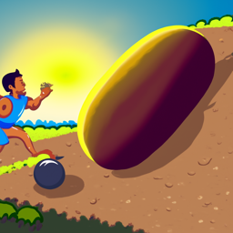
A photo of Sisyphus pushing up a boulder up a hill
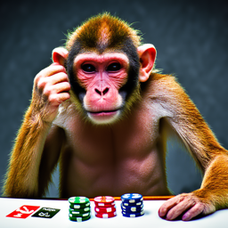
A photo of a monkey playing poker
An UFO
num_inference_steps=100
A photo of Sisyphus pushing up a boulder up a hill
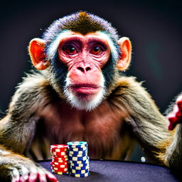
A photo of a monkey playing poker
An UFO
The quality of the outputs for num_inference_steps=100 are much more realistic than num_inference_steps=20 (e.g., the Sisyphus and UFO images seem surrealistic and a bit uncanny). The results do reflect the associated text prompts, but for instance in the Sisyphus image for num_inference_steps=20, it is much harder to discern without context.
Part 1: Sampling Loops
1.1 Implementing the Forward Process
The forward process for diffusion is defined by:
\(\begin{align} x_t = \sqrt{\bar\alpha_t} x_0 + \sqrt{1 - \bar\alpha_t} \epsilon \quad \text{where}~ \epsilon \sim N(0, 1) \end{align}\)
for a given clean image \(x_0\) and noise coefficient \(\bar{\alpha}_t\) at timestep \(t\). The \(\bar{\alpha}_t\) noise coefficients are taken from the first stage of the pretrained DeepFloyd IF diffusion model as alphas_cumprod.
So, I implemented this forward process as a function forward(im, t) that takes in an image im (\(x_0\)) and timestep t and outputs im_noisy (\(x_t\)).
I ran the forward process on the Campanile test image with \(t \in [250, 500, 700]\):

Original

Noisy Campanile at \(t=250\)

Noisy Campanile at \(t=500\)

Noisy Campanile at \(t=750\)
1.2 Classical Denoising
I will try to denoise the images using classic Gaussian blur filtering:
Noisy Campanile at \(t=250\)
Noisy Campanile at \(t=500\)
Noisy Campanile at \(t=750\)

Gaussian Blur Denoising \(t=250\)
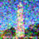
Gaussian Blur Denoising \(t=500\)
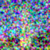
Gaussian Blur Denoising at \(t=750\)
1.3 One-Step Denoising
Now, I'll use a pretrained diffusion model to denoise the 3 noisy Campanile images (\(t = [250, 500, 750]\)) by using my forward function to add noise to each image, pass each through the first stage of a UNet to estimate the noise in the new noisy image, and then remove the noise from each noisy image to obtain an estimate of each of the original images.
Here are the comparisons from the original image, noisy image, and estimate of the original images for each \(t = [250, 500, 750]\):
Original
Noisy Campanile at \(t=250\)
Noisy Campanile at \(t=500\)
Noisy Campanile at \(t=750\)

One-Step Denoised Campanile at \(t=250\)

One-Step Denoised Campanile at \(t=500\)
One-Step Denoised Campanile at \(t=750\)
1.4 Iterative Denoising
We can improve the one-step denoiser from Part 1.3 by implementing an iterative denoiser iterative_denoise. To save time and computational cost, I used a strided step of \(30\) starting at timestep \(990\) to denoise to timestep \(0\). At each denoising step, I used the following formula:
\(\begin{align} x_{t'} = \frac{\sqrt{\bar\alpha_{t'}}\beta_t}{1 - \bar\alpha_t} x_0 + \frac{\sqrt{\alpha_t}(1 - \bar\alpha_{t'})}{1 - \bar\alpha_t} x_t + v_\sigma \end{align}\)
where:
- \(x_t\) is your image at timestep \(t\)
- \(x_{t'}\) is your noisy image at timestep \(t'\) where \(t' < t\) (less noisy)
- \(\bar\alpha_t\) is the noise coefficient at timestep \(t\)
- \(\alpha_t = \bar\alpha_t / \bar\alpha_{t'}\)
- \(\beta_t = 1 - \alpha_t\)
- \(x_0\) is our current estimate of the clean image
This is a snippet of what iterative_denoise loop looks like:
for i in range(i_start, len(timesteps) - 1):
...
clean_t_step = (image - sqrt(1-alpha_cumprod)*noise_est) / sqrt(alpha_cumprod)
pred_prev_image = ((sqrt(alpha_cumprod_prev)*beta)/(1-alpha_cumprod))*clean_t_step
+ ((sqrt(alpha)*(1-alpha_cumprod_prev))/(1-alpha_cumprod))*image
+ add_variance(...)
image = pred_prev_image
Here are the results of the iterative denoising, as well as a comparison to the denoised estimations from the previous parts:
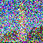
Noisy Campanile at \(t=690\)
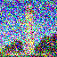
Noisy Campanile at \(t=540\)
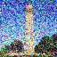
Noisy Campanile at \(t=390\)
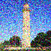
Noisy Campanile at \(t=240\)
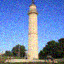
Noisy Campanile at \(t=90\)
Iteratively Denoised Campanile
Original
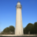
One-Step Denoised Campanile
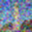
Gaussian Blurred Campanile
1.5 Diffusion Model Sampling
I will use the iterative_denoise function to now generate images from scratch. Setting the starting timestep index to \(0\) and inputting random noise image into iterative_denoise, these are five results of the prompt "a high quality photo":
Sample 1
Sample 2
Sample 3
Sample 4
Sample 5
1.6 Classifier-Free Guidance (CFG)
In order to greatly improve image quality (at the expense of image diversity), we can use a technique called Classifier-Free Guidance. Now, we compute both a conditional noise estimate \(\epsilon_c\) and an unconditional noise estimate \(\epsilon_u\). Then, we let our new noise estimate be:
\(\begin{align} \epsilon = \epsilon_u + \gamma(\epsilon_c - \epsilon_u) \end{align}\)
where \(\gamma\) controls the strength of CFG (I used \(\gamma=7\)). To get an unconditional noise estimate, we can just pass an empty prompt embedding of "" to the diffusion model.
Here is a snippet of my implementation of iterative_denoise_cfg, which is almost identical to iterative_denoise:
for i in range(i_start, len(timesteps) - 1):
...
cfg_noise_est = uncond_noise_est + scale*(noise_est - uncond_noise_est)
clean_t_step = (image - sqrt(1-alpha_cumprod)*cfg_noise_est) / sqrt(alpha_cumprod)
pred_prev_image = ((sqrt(alpha_cumprod_prev)*beta)/(1-alpha_cumprod))*clean_t_step
+ ((sqrt(alpha)*(1-alpha_cumprod_prev))/(1-alpha_cumprod))*image
+ add_variance(...)
image = pred_prev_image
Here are five images of "a high quality photo" with a CFG scale of \(\gamma=7\):
Sample 1 with CFG
Sample 2 with CFG
Sample 3 with CFG
Sample 4 with CFG
Sample 5 with CFG
1.7 Image-to-image Translation
Here are edits of the Campanile images at noise levels with starting indices i_start = [1, 3, 5, 7, 10, 20] with the conditional text prompt "a high quality photo".
Campanile
SDEdit with i_start=1
SDEdit with i_start=3
SDEdit with i_start=5
SDEdit with i_start=7
SDEdit with i_start=10
SDEdit with i_start=20
Similarly, here are the results with two other test images:

SDEdit with i_start=1
SDEdit with i_start=3
SDEdit with i_start=5
SDEdit with i_start=7
SDEdit with i_start=10
SDEdit with i_start=20
SDEdit with i_start=1
SDEdit with i_start=3
SDEdit with i_start=5
SDEdit with i_start=7
SDEdit with i_start=10
SDEdit with i_start=20
1.7.1 Editing Hand-Drawn and Web Images
This procedure works better for nonrealistic images, so here are the results:
Web Image
Diamond
Diamond at i_start=1
Diamond at i_start=3
Diamond at i_start=5
Diamond at i_start=7
Diamond at i_start=10
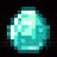
Diamond at i_start=20
Hand-Drawn Images
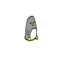
Penguin sketch
Penguin at i_start=1
Penguin at i_start=3
Penguin at i_start=5
Penguin at i_start=7
Penguin at i_start=10
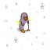
Penguin at i_start=20
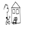
House sketch
House at i_start=1
House at i_start=3
House at i_start=5
House at i_start=7
House at i_start=10
House at i_start=20
1.7.2 Inpainting
Again, I will use the same procedure to implement inpainting, i.e., given an image \(x_{\text{orig}}\), and a binary mask \(\bf{m}\), we can create a new image that has the same content where \(\bf{m}\) is \(0\), but new content wherever \(\bf{m}\) is \(1\). At every step of the diffusion denoising loop after computing \(x_t\), we "force" it to have the same pixels as \(x_{\text{orig}}\) where \(\bf m\) is 0:
\(\begin{align} x_t \leftarrow \textbf{m} x_t + (1 - \textbf{m})\text{forward}(x_{\text{orig}}, t) \end{align}\)
Here is a snippet of the inpaint function that does this procedure, which is the same as iterative_denoise_cfg, except it denoises a random noise image and does the inpainting step at the end of the iterative loop:
image = torch.randn_like(original_image)
for i in range(10, len(timesteps) - 1):
...
clean_t_step = (image - sqrt(1-alpha_cumprod)*cfg_noise_est) / sqrt(alpha_cumprod)
pred_prev_image = ((sqrt(alpha_cumprod_prev)*beta)/(1-alpha_cumprod))*clean_t_step
+ ((sqrt(alpha)*(1-alpha_cumprod_prev))/(1-alpha_cumprod))*image
+ add_variance(...)
image = pred_prev_image
image = mask*image + (1-mask)*(forward(original_image, t))
Here are the inpainted results:
Campanile
Campanile

Mask

Hole to Fill
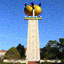
Campanile Inpainted
Replacing a subject
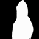
Mask
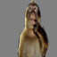
Hole to Fill
Inpainted
Erase people in the background
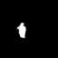
Mask
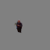
Hole to Fill
Inpainted
1.7.3 Text-Conditional Image-to-image Translation
Now, I will do the same thing as in 1.7 and 1.7.1, but guide the projection with a text prompt:
Campanile
A mosaic of a waterfall at i_start=1
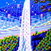
A mosaic of a waterfall at i_start=3
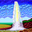
A mosaic of a waterfall at i_start=5
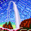
A mosaic of a waterfall at i_start=7
A mosaic of a waterfall at i_start=10
A mosaic of a waterfall at i_start=20
Diamond
An UFO at i_start=1
An UFO at i_start=3
An UFO at i_start=5
An UFO at i_start=7
An UFO at i_start=10
An UFO at i_start=20
Penguin sketch
A lithograph of a cat at i_start=1
A lithograph of a cat at i_start=3
A lithograph of a cat at i_start=5
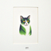
A lithograph of a cat at i_start=7
A lithograph of a cat at i_start=10
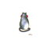
A lithograph of a cat at i_start=20
1.8 Visual Anagrams
Now, I will create Visual Anagrams with diffusion models, specifically images that look like one prompt, but another prompt flipped upside down.
To do so, I will denoise an image \(x_t\) at step \(t\) normally with the prompt \(p_1\), to obtain noise estimate \(\epsilon_1\). But at the same time, flip \(x_t\) upside down, and denoise with the prompt \(p_2\) to get noise estimate \(\epsilon_2\). Then, I flip \(\epsilon_2\) back, and average the two noise estimates. After, perform a reverse diffusion step with the averaged noise estimate.
This is a snippet of what make_flip_illusion looks like:
for i in range(i_start, len(timesteps) - 1):
...
model_output_1 = stage_1.unet(image, t, prompt_embeds_1)[0]
uncond_model_output_1 = stage_1.unet(image, t, uncond_prompt_embeds_1)[0]
cfg_noise_est_1 = uncond_noise_est_1 + scale*(noise_est_1 - uncond_noise_est_1)
flipped_image = flip(image, [2])
model_output_2 = stage_1.unet(flipped_image, t, prompt_embeds_2)[0]
uncond_model_output_2 = stage_1.unet(flipped_image, t, uncond_prompt_embeds_2)[0]
cfg_noise_est_2 = uncond_noise_est_2 + scale*(noise_est_2 - uncond_noise_est_2)
cfg_noise_est_2 = flip(cfg_noise_est_2, [2])
cfg_noise_est = (cfg_noise_est_1 + cfg_noise_est_2) / 2
clean_t_step = (image - sqrt(1-alpha_cumprod)*cfg_noise_est) / sqrt(alpha_cumprod)
pred_prev_image = ((sqrt(alpha_cumprod_prev)*beta)/(1-alpha_cumprod))*clean_t_step
+ ((sqrt(alpha)*(1-alpha_cumprod_prev))/(1-alpha_cumprod))*image
+ add_variance(...)
image = pred_prev_image
Here are the generated illusions:
An oil painting of LeBron James

An oil painting of a goat
A sky view of San Francisco
A mosaic of a waterfall
1.9 Hybrid Images
In this part, I will implement Factorized Diffusion. Similar to Part 1.8, I will create a composite noise estimate \(\epsilon\) by estimating the noise with two different text prompts, and then combining low frequencies from one noise estimate with high frequencies of the other. I will use torchvision.transforms.functional.gaussian_blur with kernel size \(33\) and \(\sigma=2\) to get the low and high frequencies. Here is a snippet of what the make_hybrids function that does this:
for i in range(i_start, len(timesteps) - 1):
...
model_output_1 = stage_1.unet(image, t, prompt_embeds_1)[0]
uncond_model_output_1 = stage_1.unet(image, t, uncond_prompt_embeds_1)[0]
cfg_noise_est_1 = uncond_noise_est_1 + scale*(noise_est_1 - uncond_noise_est_1)
cfg_noise_est_1 = TF.gaussian_blur(cfg_noise_est_1, kernel_size=33, sigma=2)
model_output_2 = stage_1.unet(flipped_image, t, prompt_embeds_2)[0]
uncond_model_output_2 = stage_1.unet(flipped_image, t, uncond_prompt_embeds_2)[0]
cfg_noise_est_2 = uncond_noise_est_2 + scale*(noise_est_2 - uncond_noise_est_2)
cfg_noise_est_2 = cfg_noise_est_2 - TF.gaussian_blur(cfg_noise_est_2, kernel_size=33, sigma=2)
cfg_noise_est = cfg_noise_est_1 + cfg_noise_est_2
clean_t_step = (image - sqrt(1-alpha_cumprod)*cfg_noise_est) / sqrt(alpha_cumprod)
pred_prev_image = ((sqrt(alpha_cumprod_prev)*beta)/(1-alpha_cumprod))*clean_t_step
+ ((sqrt(alpha)*(1-alpha_cumprod_prev))/(1-alpha_cumprod))*image
+ add_variance(...)
image = pred_prev_image
Here are the generated hybrid images:
Hybrid images of an UFO and Lake Lugano
Hybrid images of a guitar and an oil painting of a skeleton smoking a cigarette
Part B: Flow Matching from Scratch!
Part 1: Training a Single-Step Denoising UNet
1.1 Implementing the UNet
Given a noisy image \(z\), we aim to train a denoiser \(D_\theta\) such that it maps \(z\) to a clean image \(x\). This is optimized over an L2 loss:
\(\begin{align} L = \mathbb{E}_{z,x} \|D_{\theta}(z) - x\|^2 \end{align}\)
Following the PyTorch neural network framework structure, I implemented a simple one-step denoiser as an unconditional UNet. This is the architecture of the network:

Unconditional UNet
The network uses a number of standard tensor operations defined as follows:

Standard UNet Operations
These operations were implemented using the functions of the torch.nn module, i.e., nn.Sequential(), nn.Conv2d(), nn.BatchNorm2d(), nn.GELU() nn.ConvTranspose2d(), and nn.AvgPool2d.
The Concat operation is simply torch.cat() along the channel dimension. The unconditional UNet then used these implemented operations, as I implemented the forward() function that follows the diagram of the network.
1.2 Using the UNet to Train a Denoiser
To train the denoiser on the MNIST dataset (torchvision.datatsets.MNIST), we need to generate training data pairs of \((z, x)\). For each training batch, we generate noisy image \(z\) from clean MNIST digit \(x\) using the following noising process:
\(\begin{align} z = x + \sigma \epsilon,\quad \text{where }\epsilon \sim N(0, I) \end{align}\)
This is defined in Python as a nn.Module class called NoisingProcess, where its forward() function follows the above process.
Here is a visualization of the noising process over \(\sigma = [0.0, 0.2, 0.4, 0.5, 0.6, 0.8, 1.0]\), assuming normalized \(x \in [0,1]\):
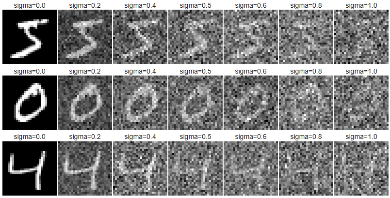
Observe that the images become noiser as \(\sigma\) increases, which makes sense as it increases the effect of additive noise \(\epsilon\).
1.2.1 Training
Now, I will train the denoiser (unconditional UNet) with hidden dimension \(128\) on the MNIST training set with batch size of 256 over 5 epochs to denoise noisy image \(z\) with noise level \(\sigma = 0.5\) applied to a clean image \(x\). I will use the Adam optimizer with a learning rate of 1e-4.
This was the training loss curve plot during the whole training process of \(\sigma = 0.5\):
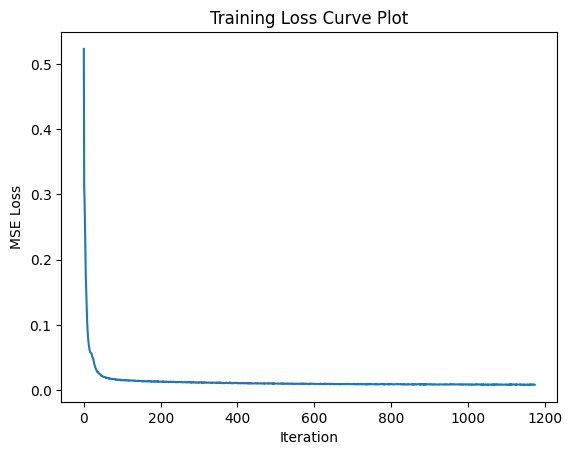
Here are the denoised results on the test set at the 1st and 5th (last) epochs:
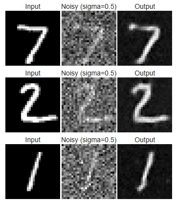
Results after epoch 1

Results after epoch 5
1.2.2 Out-of-Distribution Testing
Let's see how the denoiser performs on different \(\sigma\)'s that it wasn't trained for. Here are the results on test set digits with varying noise levels \(\sigma = [0.0, 0.2, 0.4, 0.5, 0.6, 0.8, 1.0]\):
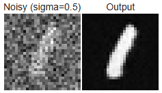
UNet \(\sigma\) was trained on
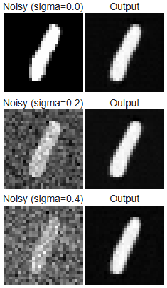
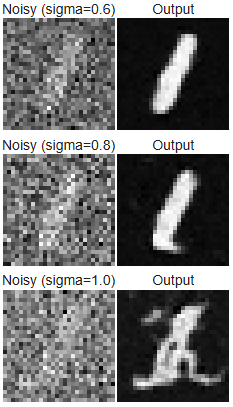
1.2.3 Denoising Pure Noise
To make denoising a generative task, ideally we would like to be able to denoise pure, random Gaussian noise (\(z = \epsilon\)) into a clean digit. Now, I trained a separate unconditional UNet to denoise pure noise by inputting pure noise and computing the loss against the MNIST training set. This was the training loss curve plot during the whole training process of \(\sigma = 0.5\):
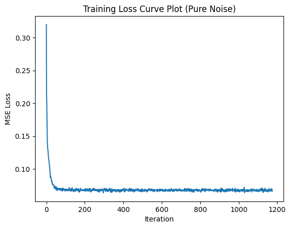
Here are the denoised results on the test set at the 1st and 5th (last) epochs:
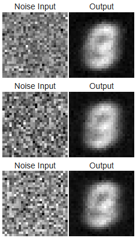
Results after epoch 1
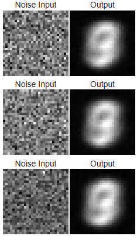
Results after epoch 5
The results resemble a blurry average of all MNIST digits, with the number \(3\) appearing most prominent. This makes sense because this denoiser learns to map pure Gaussian noise, containing no structure, to the mean of the training data. Since the denoiser model is optimized using the MSE loss (minimizes the sum of squared distances to all MNIST training examples), the network converges to output the pixelwise average of the dataset. As a result, the final output looks like an indistinct "average digit" rather than any specific number.
Part 2: Training a Flow Matching Model
I will now implement a flow matching model that iteratively denoises an image, which will work better for generative tasks than the one-step denoising model implemented in Part B.1. Here, I will iteratively denoise an image by training a UNet model to predict the flow/velocity from our noisy data to clean data.
In this setup, we sample a pure noise image \(x_0 \sim N(0,I)\) and generate a realistic image \(x_1\) from the MNIST dataset. Then, we define a noising process to generate intermediate noisy images \(x_t\) for \(t \in [0,1]\) (or, a vector field that describes the position of a point \(x_t\) at time \(t\) relative to the clean data distribution \(p_1(x_1)\) and noisy data distribution \(p_0(x_0)\)) using linear interpolation:
\(\begin{align} x_t = (1-t)x_0 + tx_1 \quad \text{where } x_0 \sim \mathcal{N}(0, 1), t \in [0, 1] \end{align}\)
Flow can be thought of as the velocity (change in position w.r.t. time) of this vector field, describing how to move from \(x_0\) to \(x_1\):
\(\begin{align} u(x_t, t) = \frac{d}{dt} x_t = x_1 - x_0 \end{align}\)
Then, the goal is to learn a UNet \(u_\theta(x_t, t)\) that approximates this flow \(u(x_t, t) = x_1 - x_0\), i.e., to minimize:
\(\begin{align} L = \mathbb{E}_{x_0 \sim p_0(x_0), x_1 \sim p_1(x_1), t \sim U[0, 1]} \|(x_1-x_0) - u_\theta(x_t, t)\|^2 \end{align}\)
2.1 Adding Time Conditioning to UNet
Following the PyTorch neural network framework structure, I implemented a time-conditioned UNet. It has the same structure as in Part B.1.1, but now injects scalar \(t\) into the network after the Unflatten and first UpBlock layers. This is the architecture of the network:

Time-Conditioned UNet
This uses a new operator called FCBlock (fully-connected block) that uses nn.Linear(), which is used to inject the conditioning singal into the UNet:

FCBlock for conditioning
The time-conditioned UNet uses this operation in the forward process as shown in the diagram, which looks like this:
t1 = self.fc1_t(t)
t2 = self.fc2_t(t)
...
x_unflatten = x_unflatten * t1
...
x_up1 = x_up1 * t2
...
return x_out
2.2 Training the Time-conditioned UNet
To train the flow matching UNet model, I implemented the forward process (Algorithm 1) for time-conditioned denoising:

Training time-conditioned UNet
I trained the time-conditioned UNet \(u_\theta(x_t, t)\) with hidden dimension \(64\) on the MNIST training set with batch size of 64 over 10 epochs to predict the flow/velocity at \(x_t\) given a noisy image \(x_t\) and a timestep \(t\) (for 50 timesteps).
I will use the Adam optimizer with an initial learning rate of 1e-2, and an exponential learning rate decay scheduler with a gamma of \(0.1^{1.0/\text{num_epochs}}\) using torch.optim.lr_scheduler.ExponentialLR().
This was the training loss curve plot over the whole training process:
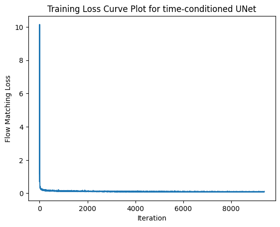
2.3 Sampling from the Time-conditioned UNet
I also implemented the reverse process (Algorithm 2):
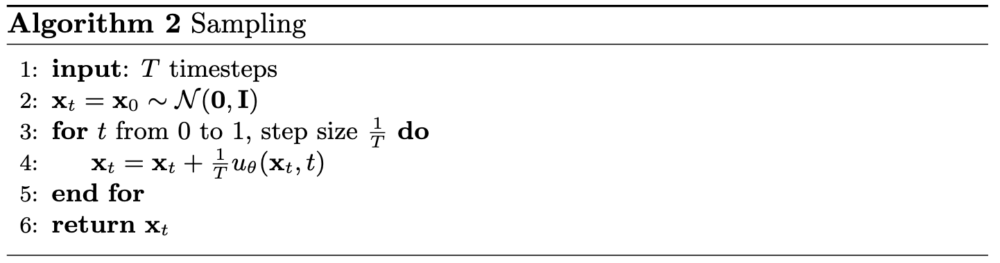
Sampling from time-conditioned UNet
Here are the denoised results from the time-conditioned UNet for the 1st, 5th, and 10th (last) epochs:
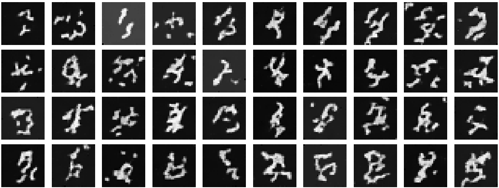
Results after epoch 1
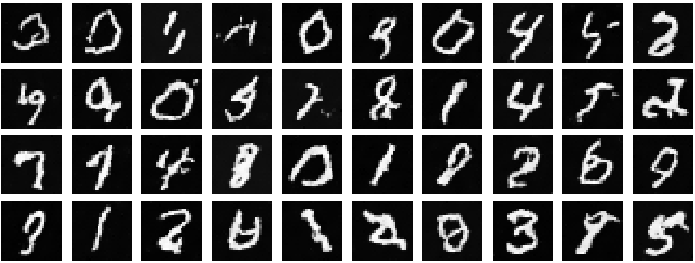
Results after epoch 5
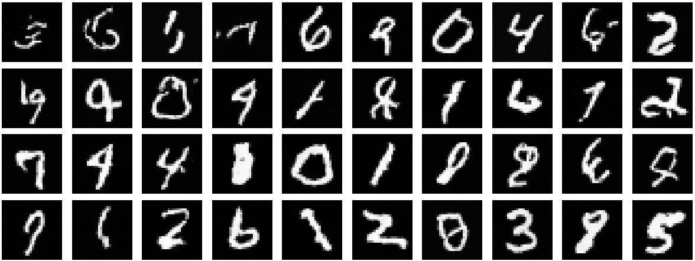
Results after epoch 10
2.4 Adding Class Conditioning to UNet
To improve upon the previous results and give us more control for image generation, we can optionally condition the UNet on the 0-9 digit classes in addition to the time conditioning.
Using the same implementation and architecture as in Part B.2.1, I modified the UNet to also inject class conditioning after the Unflatten and first UpBlock layers by adding 2 more FCBlocks that input a one-hot class-conditioning vector \(c\). Here is kind of how I implemented the class-conditioning in the forward process:
c = torch.nn.functional.one_hot(c, num_classes)
c1 = self.fc1_c(c)
c2 = self.fc2_c(c)
t1 = self.fc1_t(t)
t2 = self.fc2_t(t)
...
x_unflatten = x_unflatten * t1 + c1
...
x_up1 = x_up1 * t2 + c2
...
return x_out
2.5 Training the Class-conditioned UNet
Because we still want our UNet to work without it being conditioned on any class, we implement dropout where \(10\%\) of the time (\(p_{\text{uncond}}=0.1\) we set the class conditioning vector \(c\) to \(0\). Training will be the same as the time-only algorithm, with the only difference is incorporating the conditioning vector \(c\) and doing unconditional generation periodically. Here is the I implemented the described forward process (Algorithm 3) that I implemented:

Training class-conditioned UNet
I trained the class-conditioned UNet \(u_\theta(x_t, t, c)\) with hidden dimension \(64\) on the MNIST training set with batch size of 64 over 10 epochs to predict the flow/velocity at \(x_t\) given a noisy image \(x_t\), timestep \(t\) (for 300 timesteps) and class-conditioning vector \(c\).
I will use the Adam optimizer with an initial learning rate of 1e-2, and an exponential learning rate decay scheduler with a gamma of \(0.1^{1.0/\text{num_epochs}}\)..
This was the training loss curve plot over the whole training process:
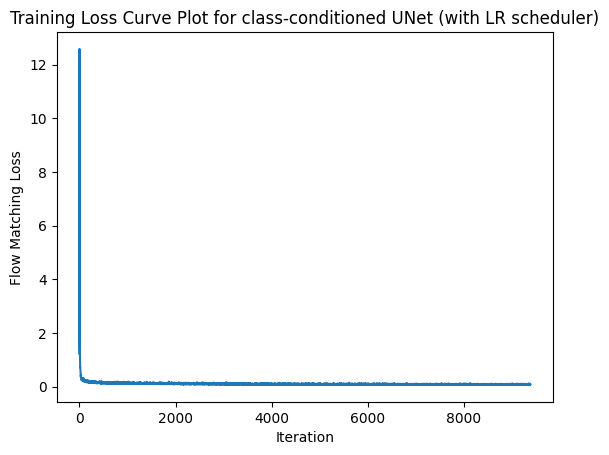
2.6 Sampling from the Class-conditioned UNet
I then implemented the reverse process (Algorithm 4) that incorporates classifier-free guidance with \(\gamma = 5.0\):

Sampling from class-conditioned UNet
Here are the denoised results from the classed-conditioned UNet for the 1st, 5th, and 10th (last) epochs:
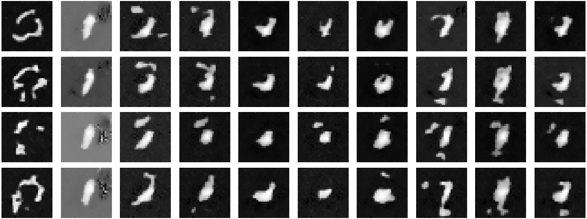
Results after epoch 1
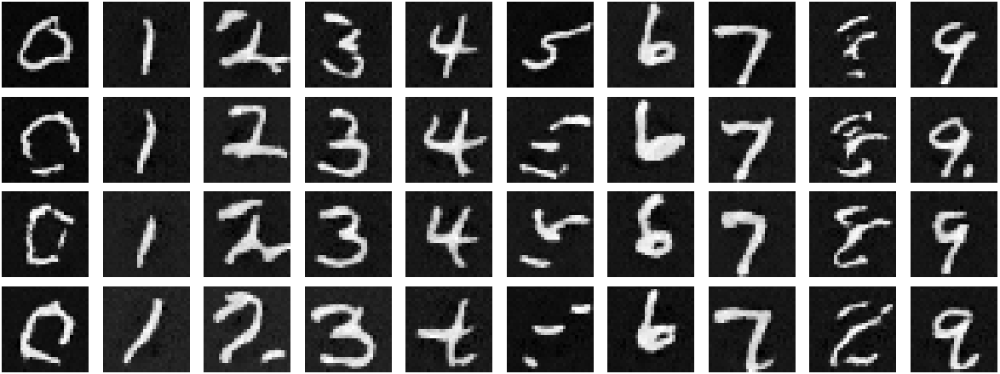
Results after epoch 5
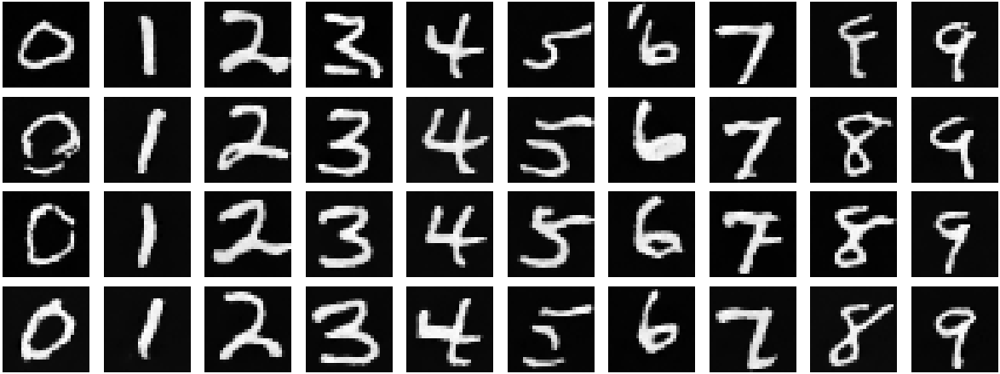
Results after epoch 10
I then removed the learning rate scheduler for simplicity. To componensate for the loss of the scheduler, I decreased the learning rate of the Adam optimizer to 3e-3. Here are the results without a learning rate scheduler:
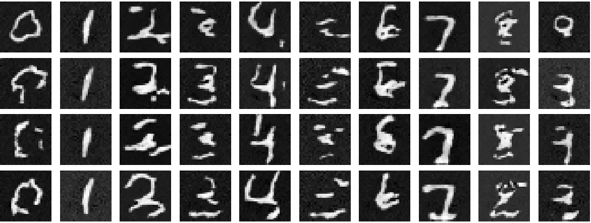
Results after epoch 1
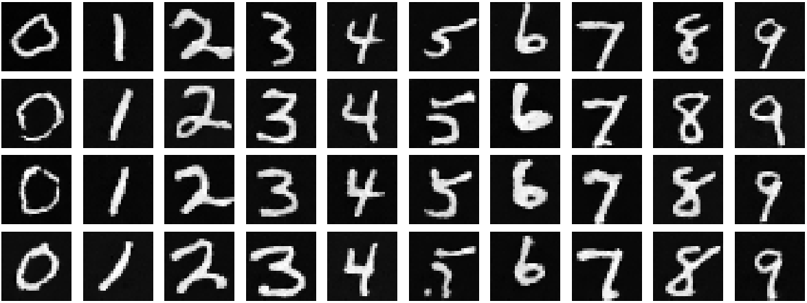
Results after epoch 5
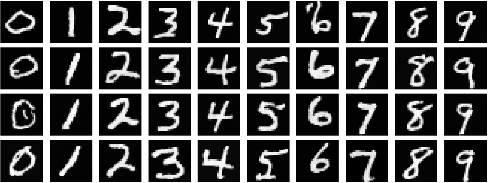
Results after epoch 10